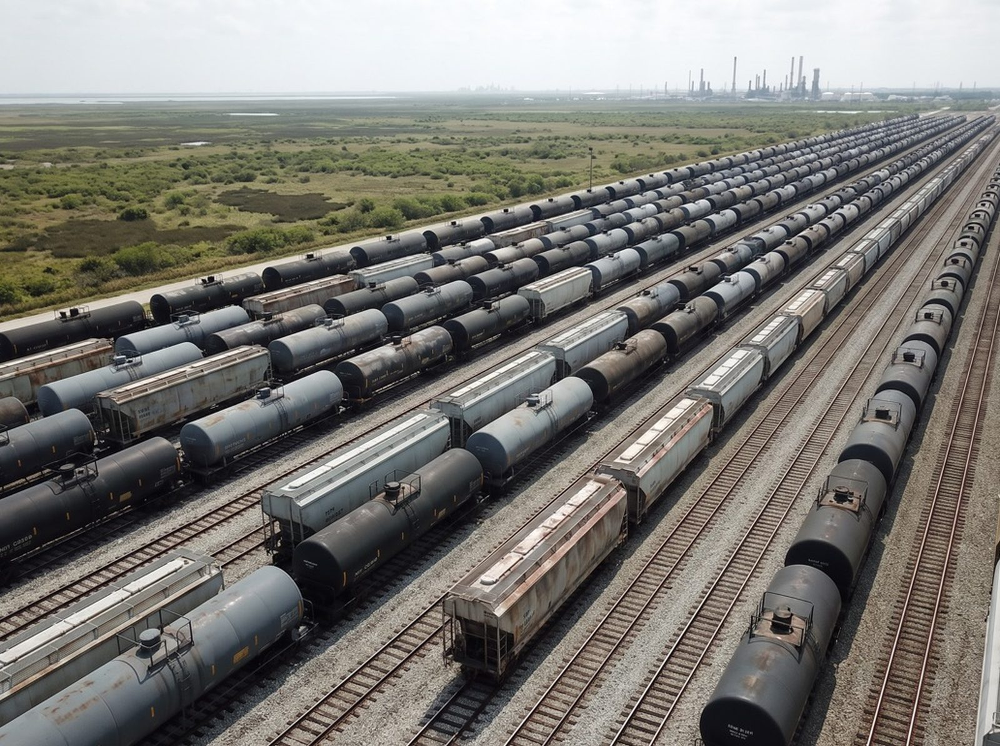
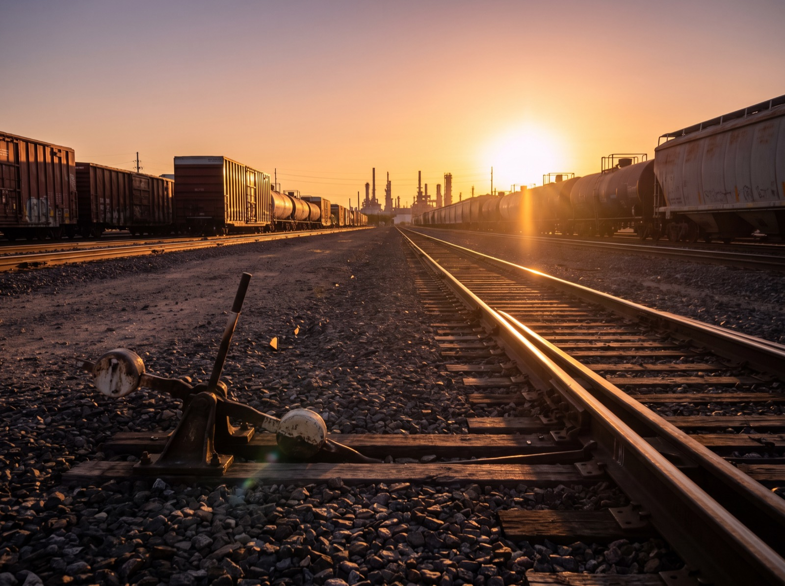

Home / Insights
Field notes
What we see from inside the yard.
Practical analysis on Texas rail: where capacity actually sits, what creates congestion, and how shippers can stop paying for someone else's bottleneck. Written by operators, not marketers.

Demurrage: How the Railcar Clock Actually Works
When the clock starts, what constructive placement really costs you, the four charges the STB has called unreasonable, and how to run a dispute that actually goes somewhere.
Read the guide →
Houston Railyards: The Complete Operator's Guide
How the largest rail-served industrial market in North America actually works — the Class I trunk lines, the PTRA switching layer, the private yards, and where the real bottlenecks live.
Read the guide →
More coming. We publish what we learn running yards — capacity trends, demurrage economics, Class I service patterns, and the operating details that decide whether a terminal works. Questions you want answered? Send them to
operations@hallraillogistics.com.
Let's talk
Have a yard problem worth solving?
We would rather look at your actual numbers than write about it in the abstract.